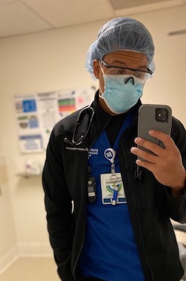
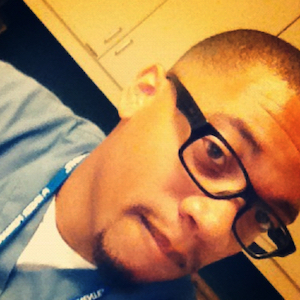
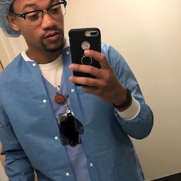
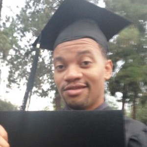

Biography
 My bio is about Kenyatta Irvin who is my older cousin and is currently an RN (Registered Nurse) at Kaiser Permanente. He started off earning his Associates of Science in Nursing from Pierce College. Kenyatta Irvin shortly after attended college at Cal State LA. During his time at Cal State LA he majored in Nursing where he received a Bachelors in Science. For a short period of time he was studying abroad through Cal State LA at the University of Madrid. While at the University of Madrid he was studying nursing as well as Spanish which he has become fluent in. He is currently still studying at Cal State LA where he is working on his masters degree in Nursing. He is also working towards getting his license to become a nurse practitioner.
Career
Kenyatta Irvin has been working as a nurse for the past 8 years at Kaiser Permanente. He started off his career working as a LVN (Licensed Vocation Nurse) in 2012 after completing his education for his Associates in Nursing. A few years after him receiving his A.S he then became a RN (Registered Nurse) shortly after he finished his Bachelors of Science in Nursing. When he first arrived at kaiser he started off working in the head and neck department then transferred to the radiation oncology department in 2013. Which he has remained for the past 7 years as he continues to further his education. He has also begun preparations to start teaching at the local university college in the San Fernando Valley.


